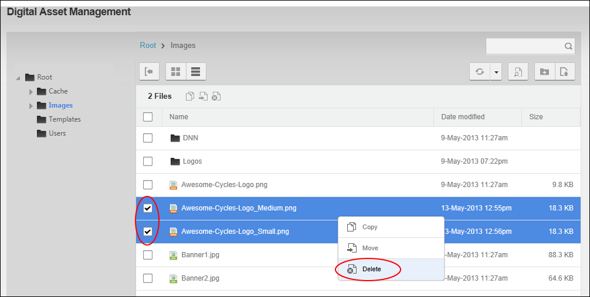
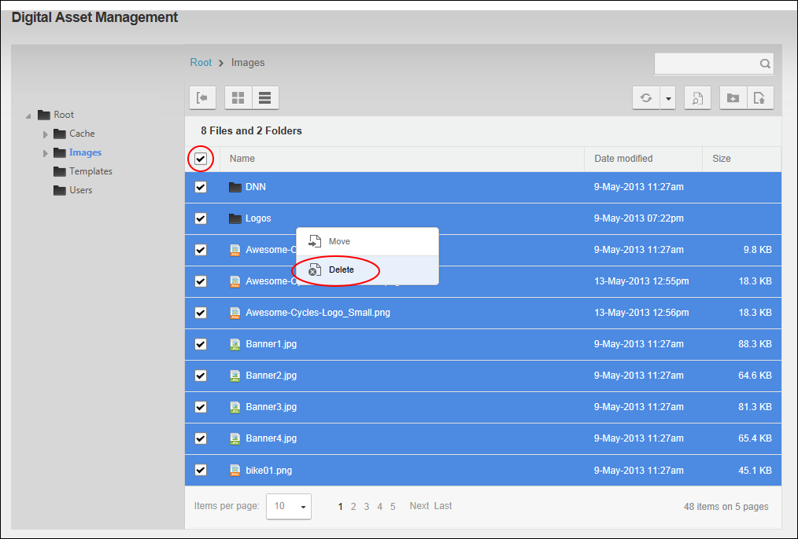

File Management - OR - Go to a Digital Asset Management Pro module.
File Management - OR - Go to a Digital Asset Management Pro module.How to permanently delete one or more files and/or one or more folders including all the subfolders and files within that folder from the Digital Asset Management Pro module.
Users (including anonymous users) must be granted Write to Folder permission to the folder that the subfolders or files are located.
Users (including anonymous users) must be granted Manage Settings permission to the folder that the subfolders or files are located in.
File Management - OR - Go to a Digital Asset Management Pro module.

Deleting selected items

Deleting all items displayed on this page
Tip: If you are only deleting one file or folder, you can simply right click on the item and select  Delete from the drop down list.
Delete from the drop down list.